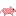
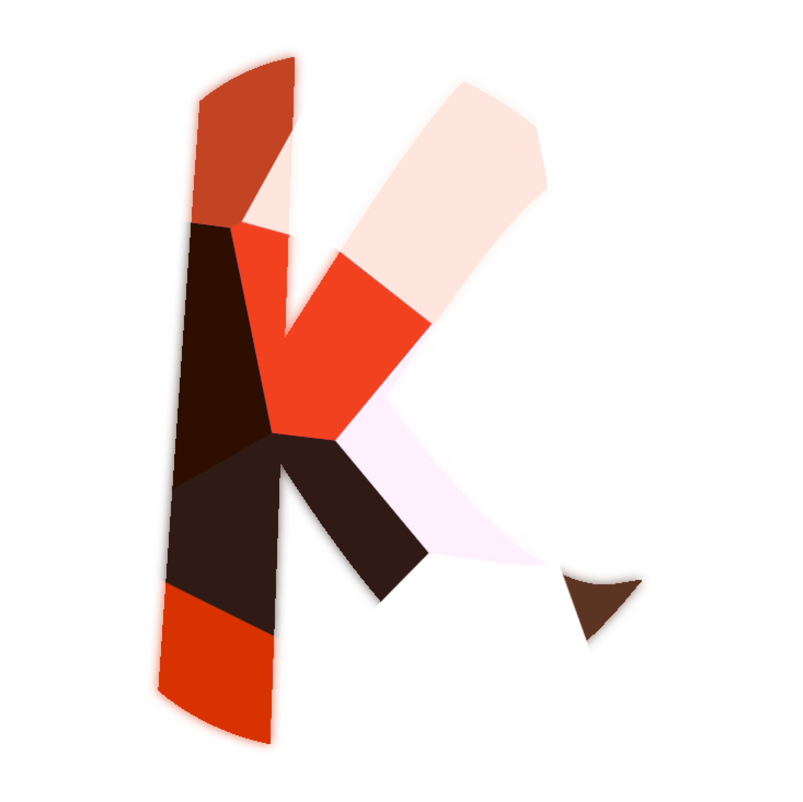
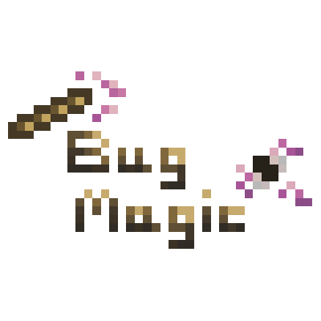

Swine
WebsiteSwine is a game engine for Python, based on Pyglet, Pymunk and Felyne. It features; scenes, a component system, GUIs (thanks to Felyne), basic support for controllers, physics (thanks to Pymunk) and an in-game terminal and command system.
Development
Prototype

Koi
WebsiteKoi is an elegant, general purpose, object-oriented programming language inspired by languages such as Kotlin and Perl 5.
Development

Bug Magic
WebsiteBug Magic is magic mod for Minecraft, themed around bugs.
Development
Production
2018
Portfolio
WebsiteMy portfolio is... well, my portfolio. Written in CoffeeScript, Pug and Stylus, packaged with Webpack, cleaned up with PostCSS, and hosted with GitHub Pages.
Development
Production
Wheeze
WebsiteWheeze is a free painting program inspired by SAI and FireAlpaca.
Development
Production
Firework
WebsiteFirework is a simple launcher for Minecraft.
Development
Production
Unofficial Unity 5 Patch
WebsiteThe UU5P is a package for Unity that hopes to make the UI more user-friendly, add easier support for other .NET languages and patch small bugs.
Development
Production
CSS Native
WebsiteCSS Native is a library for CSS that offers styles to fit the native look of some operating systems.
Development
Production
Python: Somewhat of a Guide
WebsitePython: Somewhat of a Guide is a simple guide for Python 3 meant for beginners.
Development
Production
Boar
WebsiteBoar is a program for creating collision boxes for Swine.
Development
Production
Felyne
WebsiteFelyne is a fork of Kytten, a widget toolkit for Pyglet.
Development
Production
The Snowball Effect
WebsiteThe Snowball Effect is game about a snowball rolling down a snowy hill. Whilst rolling, the snowball will slowly get bigger and the player must move the snowball to dodge the trees and rocks scattered around the hill. Sprites were created by Jimseh.
Dropped
Prototype
Quill
WebsiteQuill is a library for Python to aid in point-and-click, text-based games and software.
Dropped
Production
ASCII Painter
WebsiteASCII Painter is a simple painting program that can only paint in text. It's got layers, fonts and the ability to export to text and image files.
Dropped
Prototype
Pkinter
WebsitePkinter is a set of widgets for the Python wrapper of Tk, Tkinter. It features both utility functions and widgets such as; editable labels, collapsible panels and line numbers.
Dropped
Production
Psionide
WebsitePsionide is a simple bullet-hell game where the player can only jump from side to side, offsetting their height by tapping higher or lower. Sprites were created by TitaniumGrunt7.
Dropped
Prototype
Menu Maker
WebsiteMenuMaker is a library for Tkinter that eases menu creation.
Completed
Production
2017
Blocked Out
WebsiteBlocked Out is a basic puzzle game, where each level is an 8x8 square that can be rotated left or right, for the player to move around in.
Dropped
Prototype
Trunks
WebsiteTrunks is an esoteric language where everything is constructed as a vertical line.
Development
Demonstration
Seasoning VM
WebsiteSeasoning is a basic virtual machine that promotes coding with multiple languages.
Dropped
Prototype
Ellipse
WebsiteEllipse is an Electron-based text editor.
Dropped
Production
Colony
WebsiteColony is a simple colony simulator written in Python and Tkinter.
Dropped
Demonstration
Pickle Icon Pack
WebsitePickle Icon Pack is a collection of black and white, 16x16 icons for use in software.
Development
Production